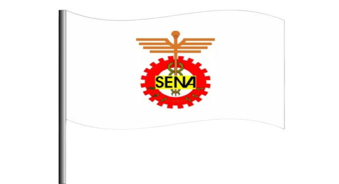

Te presentamos nuestra bandera

Te explicaremos acontinuacion un poco acerca de ella:
El escudo y la bandera del SENA, fueron diseñados cuando se fundó nuestra institución y reflejan los tres sectores económicos dentro de los cuales operamos:
El piñón:
representativo del sector industria. El caduceo:
asociado al de comercio y servicios. El café:
ligado al primario y extractivo.